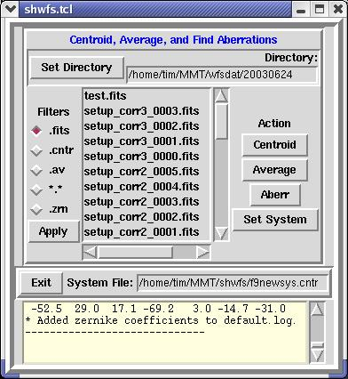
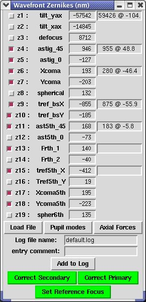

Hacksaw and Hoseclamp both have entries
for the WFS GUI in the main
system menus. Go to the Extras->Other menu, select 'F/9
Wavefront Sensor', and the following windows will appear:
This window is a simple interface that
talks over the network to wavefront to acquire WFS frames from the
Apogee CCD camera. It will automatically place images in the
default WFS data directory /mmt/shwfs/datadir.
A script runs every morning to clean up and archive any data in that
directory on both hacksaw and hoseclamp.
DS9 Image Display
Both the CCD
interface and WFS
analysis routines use a DS9 window to display the most recently
acquired
or analyzed image. The analysis routines will also display the
measured spot centroids as small red circles as well as a measure of
the
seeing determined from the widths of the spots.
WFS File Selection and Analysis Dialog

This is the main interface for
selecting files to analyze and operating on them. Primarily it
will be used to select .fits images to centroid and analyze.
Multiple consecutive images can be selected by clicking on the first
and
then holding down the Shift key while clicking on the last.
Multiple non-consecutive images can be selected by holding down the
Ctrl
key file clicking on the desired files. Various diagnostic
messages are reported to the scrollbox at the bottom.
Overlay
Window
If the automatic
centroiding and initial spot association routine fails for some reason,
this window will pop up to allow the user to align the reference spot
positions (red boxes) with the measured spots in the image.
Clicking and dragging anywhere in the image will move the entire
reference pattern around at once. The 'Mag+' and 'Mag-' buttons
will scale the reference pattern to account for any focus offset.
The centroiding parameters HWHM and Threshold can be changed and then
applied to the image by clicking 'Re-centroid'. Clicking 'Accept'
will take the reference pattern position and the improved centroiding
and use them to continue analysis of the image. Clicking
'Discard'
will cause the image to be ignored from any further processing.
Zernike Display and Wavefront Correction Window

This window displays the results of
a wavefront analysis in terms of the amplitudes of the first 19 Zernike
components. The first 3 components plus any other component with
an amplitude of less than 100 nm is deselected by default. After
modifying the selection of modes, the 'Pupil Modes' button will
generate
new wavefront error and diffraction PSF images while the 'Axial Forces'
button will generate a new primary mirror force-set.
The 'Set Reference Focus' button is largely for engineering purposes to
calibrate the focus offset between an instrument and the WFS
system. It will eventually be replaced by a pull-down menu for
selecting which instrument is mounted. The 'Correct Secondary'
button will correct the focus and coma terms by moving the secondary
mirror accordingly. The 'Correct Primary' button will calculate
the axial forces required to correct the selected Zernike modes and
then
apply them to the primary via the rcell
command.
Wavefront Error, PSF, and Mirror Force Display
The pupil image in the upper left
represents the deviation of the optics from an ideal figure while the
PSF image in the upper right displays the diffraction image that would
result from it. Both images are generated using the selected
Zernike modes in the Zernike display window and are regenerated by the
Pupil Modes button there. The bar graph in the lower left
displays
the RMS wavefront errors generated by each Zernike mode regardless of
whether they are selected or not. The scrollbox in the lower
right
displays the calculated axial force for each primary mirror actuator in
Newtons.
Acquiring and Analyzing WFS Data
- Put the comparison mirror in and select a star from one of the
WFS catalogs available in the scope window. The catalogs are
broken down into ranges of magnitude from about 8.0 to 9.75 and are
predominantly red stars of type F or later. The center for the
f/9
WFS system seems to be offset from the center of rotation by about 10"
in elevation and 2-3" in azimuth. Setting the filename to "test" in the CCD interface
window will cause the file test.fits to be continuously
overwritten. It is recommended to use that filename when taking
initial test exposures to make sure the spot image is centered.
After an image is acquired it is automatically displayed in the DS9
window.
- Under clear conditions and decent seeing 5 sec exposures are
sufficient for mag 8 stars, 10 sec for mag 9, and 20-25 sec for mag
9.75
or fainter. Bad seeing will smear the spots out and may require
longer integrations. Try to take at least 3 exposures and shoot
for about 25-30 sec or more total exposure time to help average out
seeing effects. Use the DS9 window to inspect how many counts are
in the peaks of the spots. Greater than 12000 counts runs the
risk
of saturation while less than 2000 frequently reduces the effectiveness
of the automatic analysis routines. Somewhere in the range
of 5000 to 9000 counts is a good place to shoot for, but how long it
takes to get there depends a lot on the seeing. If the seeing is
bad, it may not be worth waiting that long. Single short
exposures are recommended for initial setup since the focus and coma
aberrations are likely to be large.
- Once the images are acquired, clicking the 'Apply' button in
the WFS File Selection window will update its file listing with the
most
recent files being appended to the top of the listing. Select
those images using either Shift+click or Ctrl+click to highlight them
and then click 'Centroid' to run the analysis on them.
- As each image is analyzed, it will be displayed in the DS9
window along with the measured spot centroids. Check to make sure
as many spots are centroided as possible with few, if any, spuriously
detected spots. If the measured centroids do not match the
criteria of the automatic routines, the overlay window will pop
up. Use that to align the reference pattern with the spots in the
image and adjust the centroiding parameters until as many correct spots
are measured as possible. Bad seeing will likely require the
threshold to be decreased and the HWHM to be increased. Spurious
spots along the edge of an image or around the left/right edges of the
pupil can be gotten rid of by increasing the HWHM, the threshold, or
both. Having a few spurious spots in an image is generally not a
problem since the detailed spot association routine will reject them
most of the time. Averaging multiple frames will also help reject
any spurious spots in any single frame.
- Once the images are centroided and the centroid positions
averaged together, the results of the wavefront analysis will appear in
the Zernike and Wavefront Error windows. By default, Zernike
modes
1 through 3 plus 19 are turned off plus any other mode with an
amplitude
of less than 100 nm. More sophisticated decision trees need to be
implemented in the interface to simplify this part of the
process.
In the meantime, some notes and tips to be aware of include:
- The first three modes are ignored by the code that computes
axial forces and there's no real reason to ever turn them on.
- The values of modes 3, 6, and 7 (defocus, Xcoma, and Ycoma)
will be used when Correct Secondary is clicked regardless of whether
they're selected or not.
- To reduce the amount of force required to correct spherical
aberration (mode 8), some amount of defocus is also added to the
primary. This is then compensated for using the secondary and
reported. However, if corrections for spherical are applied and
then the mirror forces cleared via rcell
-c, the telescope focus will have to be readjusted
accordingly.
- High order terms, especially high-order spherical (mode 19),
are generally a function of mirror isothermality and can require an
inordinate amount of force to correct. They are worth correcting
if the mirror is in good thermal shape and the seeing is good, but
otherwise can be safely left alone. A good rule of thumb is to
look at the bar graph of RMS phase errors and pick a cutoff point for
which terms to correct and which to ignore. If the conditions are
good, use about 100 nm or even 50 nm if it's really good. Otherwise, go
with 150-200 nm in the interest of time, especially in the case of
astigmatism which can bounce around quite a bit if it's windy or the
seeing's bad.
- Care should be taken when dealing with modes that require a
lot of force to correct. It is possible to correct for as much as
1500 nm of spherical aberration, but it would use up a large portion of
the available force bandwidth. For now it is recommended to leave
it alone if there's more than 1000 nm. One should also not
attempt
to correct for more than about 300-350 nm of high-order spherical,
especially if there are other aberrations present. Future
versions
of the WFS interface will handle these limits more intelligently and
transparently and include the ability to correct some, but not all, of
a given mode.
- Once the modes to correct are selected and the corrective
forces calculated, the corrections are applied via the 'Correct
Secondary' and 'Correct Primary' buttons. The 'Correct Secondary'
button will correct for coma and focus by moving the secondary
accordingly. The commanded secondary motions are reported to the
file selection dialog. The 'Correct Primary' button will pass the
calculated force set to the rcell
command as well as a focus command to the secondary if a correction for
spherical aberration is performed. It will report the completion
of the rcell command as
well as any focus adjustments to the file selection dialog. The rcell output gets redirected to
the terminal window that's used to start the WFS interface. That
output will provide detailed dianostic information about the completed rcell command and whether it
was
successful or not.
- After applying corrections, it is a very good idea to take a
few frames to check on them and how well they worked. It usually
takes a few iterations to converge on an ideal solution. Under
some circumstances the primary corrections may take longer to converge,
especially if there are significant corrective forces already applied
or
if the primary is thermally stressed (e.g., has large radial gradients
present). It has been observed on several occasions that when
this occurs, clearing forces with rcell
-c and then starting over will yield much faster convergence and
better results. The cause for this is not fully understood and
will hopefully get fixed. In the meantime, if you wish to tune
the primary with the WFS, it is probably best to clear all forces first
before taking any WFS data just to be sure there's no problem.
When to Use the WFS
The WFS can and should be used for all
initial
setup. The automatic centroiding and spot association can handle
a
range of several hundred um of focus and about 60" of tilt. The
manual
overlay mode can double or triple those useful ranges. With one
or two
short exposures on a bright star the WFS can almost fully tune
collimation and focus even with a fairly poor starting point. It
is
also recommended to use the WFS to tune the primary as part of initial
setup in lieu of using startForces.
Do not apply startForces before or after tuning the primary with the
WFS. If time does not allow or conditions do not warrant, then it
is still ok to use startForces in lieu of using the WFS.
If the primary's thermal state remains steady, it will hold its figure
very well through the course of the night. Frequently, though,
it's worse at the beginning of the night so any corrections done then
to correct for that will need to be cleared and then the mirror
re-tuned in the middle of the night. Unless the conditions are
extremely good and the observing program requires excellent image
quality, it shouldn't be necessary to tune the primary more than a few
times a night at most. Once or twice should be sufficient most of
the time, especially for spectroscopic programs where image quality is
not very important at all.
Focus and coma are the most rapidly changing aberrations and the WFS
can be used to tune them fairly quickly and easily. For imaging
instruments that lack real-time video, such as Minicam, Flamingos, and
PISCES, using the WFS is much
easier and faster than doing a full focus run.
Powering Down/Uninstall
- Use the command /mmt/scripts/wavefront_halt
from hacksaw, hoseclamp, or alewife to perform a clean shutdown and
power-off of the wavefront computer.
- Check the wavefront computer to make sure the fan is off and
the ethernet LEDs are not lit.
- Unplug the Apogee cable from the
camera end first!!!
- When
the f/9 topbox is not on the telescope, it is preferred to turn
wavefront on and place it on the network somewhere to facilitate
routine
software maintenance. This should not be an issue once wavefront
has a permanent home, though.
Tim
Pickering / tim@mmto.org
July 1, 2003